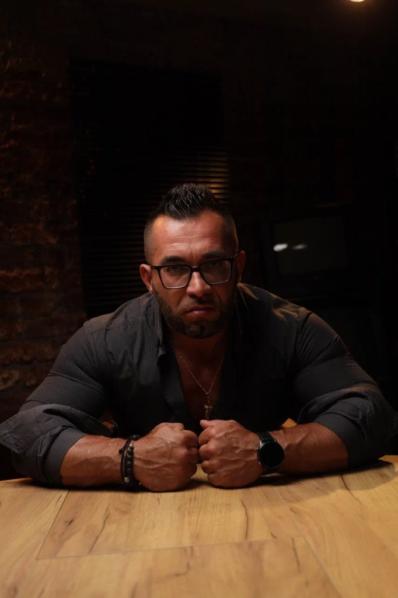

Этот вебинар нужен тебе, если ты тренируешься, но форма встала, силовые не работают, восстановление не помогает, сон отсутствует, а эрекция стала слабее или живёт своей жизнью.
28 июля · 19:00 МСК · Бесплатно · Онлайн
Чувствуешь постоянный упадок сил, постепенно снижается эрекция, пропала мотивация жить?
Бесплатный онлайн-вебинар Александра Евсеева
«Код тестостерона»
Для мужчин, которые хотят понять, что реально происходит с их состоянием здоровья, тестостероном, либидо и восстановлением.
Вебинар не только для спортсменов
28
июля
19:00
по Москве
0 ₽
участие
LIVE
живой эфир
Первый экран
Честный разговор о мужском здоровье
Ты можешь тренироваться, следить за питанием, пить добавки, сдавать анализы и всё равно не понимать, почему стало ещё хуже. Форма стоит. Силовые не идут. Сон вроде есть, а утром встаёшь разбитый. Эрекция то есть, то нет — и при этом растёт живот.
Или ты вообще не ходишь в зал, но история похожая: вялость, раздражение, плохой сон, меньше желания, вес ползёт вверх, тебя заливает, энергии на работу и жизнь не хватает. С виду вроде ничего страшного. Но внутри ты сам понимаешь: раньше было лучше.
На вебинаре разберём, почему это не сводится к «возрасту» или потому что «теста мало». Почему один показатель в анализе не объясняет, что с тобой происходит. И почему лезть в добавки, ГЗТ, фарму или чужие схемы без понимания — опасно для здоровья.
Будет живой эфир. Можно задавать свои вопросы и получать ответы. В конце — презентация программы «Код тестостерона».
Почему тебя это касается
Ты можешь делать много,
Ты можешь делать много,
но бить вообще не туда
Обычная мужская история: нет энергии и восстановления, форма не радует, либидо пропадает. И дальше начинается метание между залом, банками, анализами, советами из чатов, роликами и разговорами в раздевалке.
Меняешь тренировку. Добавляешь нагрузку. Берёшь креатин, магний, омегу, протеин. Сдаёшь общий тестостерон. Советуешься со знакомым. Смотришь, кто что ставит. Думаешь про ГЗТ или курс.
- Общий показатель тестостерона — полная ерунда
- Тренировка может быть опасна для здоровья
- Добавки не спасут, если не ясно, что выравнивать
- С ГЗТ нельзя заходить по принципу «я просто попробую»
- Фарму по совету товарища можно потом долго разгребать
На вебинаре я разберу, с чего смотреть сначала: анализы, сон, восстановление, нагрузка, ГСПГ, свободный тестостерон, эстрадиол, ХГЧ, ГЗТ, фарма, врач.
Зарегистрироваться на вебинар
Кому прийти?
Приходи, если раньше ты чувствовал себя лучше
Будь честен в первую очередь с собой
Приходи, если ты начал замечать, что после тренировки замедлился процесс восстановления и ты не видишь прогресс, который был раньше. Если у тебя нет мотивации, сил, но при этом анализы в норме.
Вебинар нужен и тем, кто не ходит в зал, но уже живёт на автопилоте: утром разбитость, вечером выжатый, сна мало, энергии мало, вес растёт, желания всё меньше — хотя ты можешь быть очень молод, тебе всего около 35, но чувствуешь себя на 60.
Приходи, если понимаешь, что раньше было иначе: больше сил, крепче сон, быстрое восстановление, нормальный отклик от тренировок и ощущение, что ты управляешь телом и результатами.
Что разберём
Почему тест «в норме»,
Почему тест «в норме»,
а ты себя плохо чувствуешь?
Анализы
Почему общий тестостерон не даёт полного ответа. Что смотреть: ГСПГ, свободный тестостерон, ЛГ, ФСГ, эстрадиол, пролактин, гематокрит.
Либидо и эрекция
Почему нет либидо. Почему эрекция стала слабее. Почему во время сна ты не восстанавливаешься.
Тренировки
Почему тренировка может нанести вред. Когда нагрузка работает против тебя, а не за тебя.
ГЗТ и фарма
Почему у одного после тестостерона легче, а у другого — хуже: отёки, акне, сон, давление. Почему на одной дозе у разных мужчин разные анализы и самочувствие.
Почему онлайн?
Запись потом
Буду онлайн 28 июля в 19:00
Запись потом
не ответит на твой вопрос
У каждого мужчины свой случай. У одного тестостерон в референсе, но тебе очень плохо. У другого высокий ГСПГ. У третьего после укола нет сна. У четвёртого на ГЗТ полез эстрадиол.
Онлайн нужен, чтобы задать свой вопрос и услышать ответ. Я не буду раздавать дозировки и назначения. Но я покажу, что нужно делать.
Высокий ГСПГ
Нет сна после укола
Эстрадиол на ГЗТ
Акне и жирная кожа
Давление
ХГЧ и планирование детей
САРМы и АЛТ
Плохое восстановление
Основатель проекта
Александр Евсеев

Автор проекта «Код тестостерона», спортсмен, бодибилдер и человек из среды.
Я более 20 лет нахожусь внутри спортивной и экспертной среды, где постоянно обсуждаются тренировки, восстановление, анализы, тестостерон, мужское состояние, гипогонадизм и ГЗТ.
- Специалист по мужскому здоровью
- В прошлом выступающий бодибилдер
- Автор и ведущий проектов «Живая сталь» и Alpha Protocol
- Спикер конференций и обучающих программ
- Фитнес-блогер
Вопросы и ответы
Частые вопросы
Вебинар бесплатный?
Да. Участие бесплатное, нужна только регистрация.
Когда он пройдёт?
28 июля в 19:00 по Москве.
Это онлайн?
Да, вебинар пройдёт онлайн.
Можно будет задать вопрос?
Да. Это одна из главных причин быть онлайн. Вопросы можно будет задавать в эфире, Александр будет отвечать по ходу встречи.
Это только для тех, кто тренируется?
Нет. Тем, кто тренируется, многое будет знакомо. Но тем, кто не ходит в зал, вебинар тоже подойдёт, если есть вялость, плохой сон, просадка по энергии, нестабильное либидо, набор веса или раздражительность.
Я уже тренируюсь. Мне это будет полезно?
Да, если форма стоит, силовые не идут, восстановление стало хуже, либидо просело, вылезли акне, отёки, давление, плохой сон или странные реакции на добавки, фарму или ГЗТ.
Нужно уже быть на ГЗТ?
Нет. Лучше прийти до того, как ты что-то начал. Но если ты уже на ГЗТ, курсе или только думаешь про ХГЧ — тоже приходи.
Будут схемы и дозировки?
Нет. Схемы, дозировки и назначения — только с врачом. На вебинаре будет разговор о том, что смотреть, какие вопросы задавать и где мужчины чаще всего ошибаются.
Будет презентация обучения?
Да. В конце Саша расскажет про программу «Код тестостерона».
Нужно покупать курс, чтобы получить пользу от вебинара?
Нет. Вебинар сам по себе даст пользу. Программа — для тех, кто захочет разбираться глубже и идти дальше.
Это медицинская консультация?
Нет. Это информационный вебинар. Он не заменяет врача, диагностику и лечение. Если есть симптомы, хронические заболевания, отклонения в анализах или состояние ухудшается — нужно идти к специалисту.
Финальный CTA
Не лезь в тестостерон наугад.
Не лезь в тестостерон наугад.
Сначала разберись, что происходит
28 июля в 19:00 по Москве
Бесплатный онлайн-вебинар «Код тестостерона»
Приходи онлайн, задавай вопросы в эфире, слушай разборы чужих ситуаций и смотри, где мужчины обычно косячат с анализами, восстановлением, ГЗТ, фармой и попытками «починить себя» вслепую.